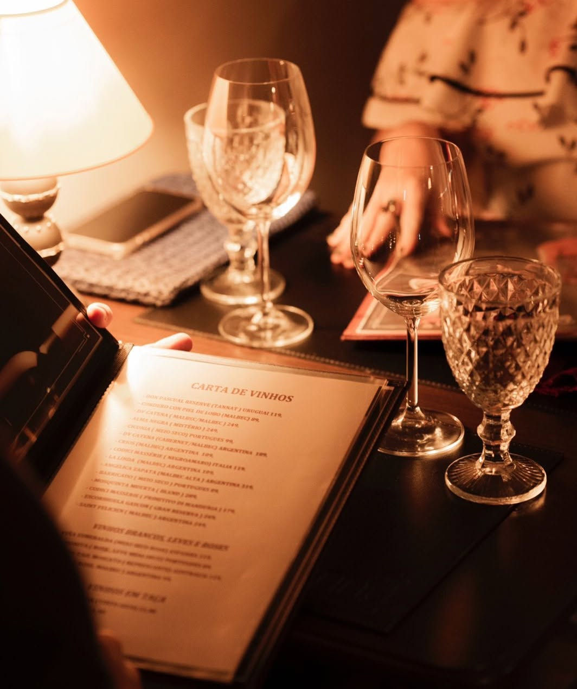
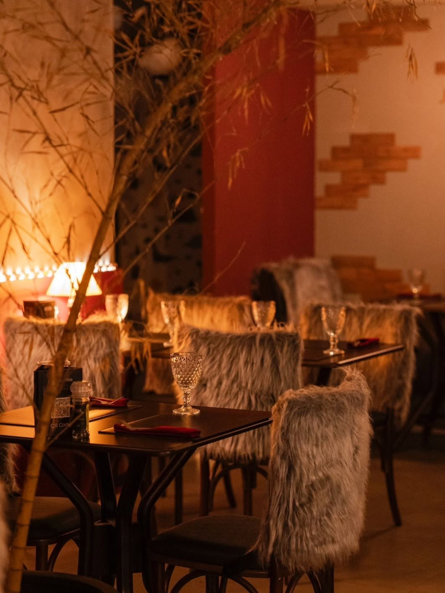
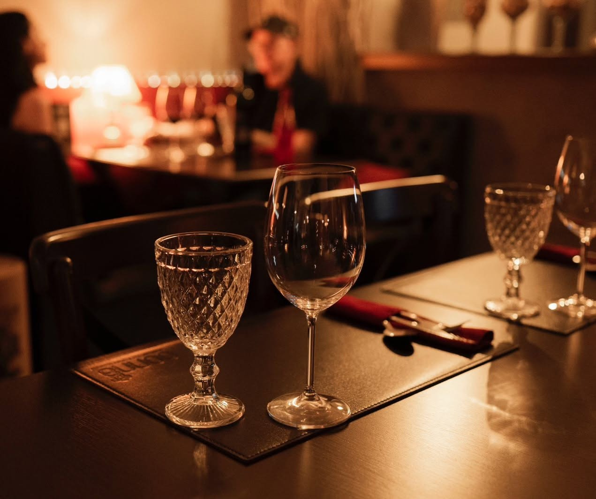
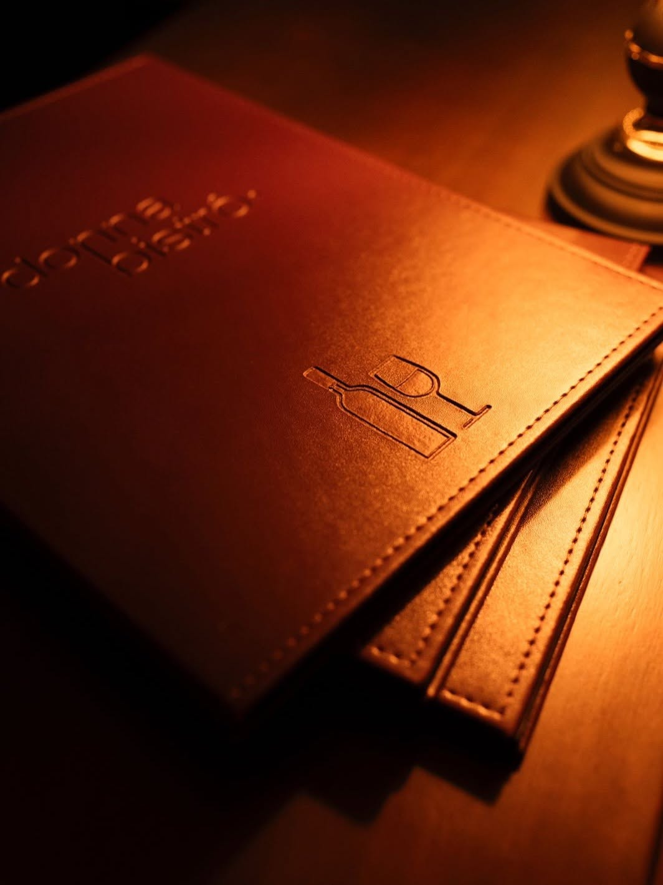

Alta Gastronomia & Vinhos
Poucas mesas. Vinhos que não se repetem. Uma noite sem pressa.
Uma experiência autoral para quem aprecia o tempo à mesa.
Haute Cuisine
Destaques da Cozinha
A Atmosfera
Luz baixa, poltronas aconchegantes e a melhor seleção de vinhos de Pato Branco.




Sua mesa
Reserve para esta noite ou para quando quiser.
Pessoas
2
Você será redirecionado ao WhatsApp para confirmar.
Respostas em até 15 minutos durante o horário de funcionamento.
Um lugar especial, ambiente agradável, aconchegante e com um menu irresistível... uma experiência à sua altura.— donna bistrô.